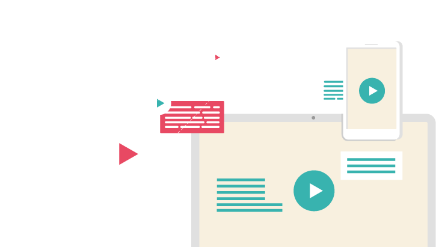
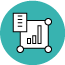

VIDEO
AI 해킹 시대의 로그 기반 통합 방어를 영상으로 확인하세요.
AI 해킹 시대의 로그 기반 통합 방어를 영상으로 확인하세요.


웹·서버·PC·계정·포렌식 로그를 하나의 흐름으로.
PLURA-AI·XDR은 WAF·EDR·SIEM·Forensic을 연결해
공격 징후를 탐지하고, 대응과 증거화까지 이어지는 보안 운영을 지원합니다.
복잡한 구축 없이 빠르게 시작하는 AI-XDR
가입, 에이전트 설치, 대시보드 확인으로 보안 운영을 시작합니다탐지·분석·차단·포렌식 증거화를 하나의 화면에서 확인합니다.

이벤트 자동 요약
제로데이 징후 분석
웹·서버·PC 공격 흐름 분석
차단·격리·포렌식 연계

탐지 근거와 대응 이력 정리
경영 요약 리포트 지원
탐지 정확도와 대응 시간 관리
관제 운영 품질 지표화